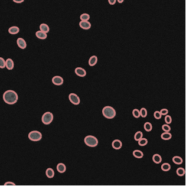
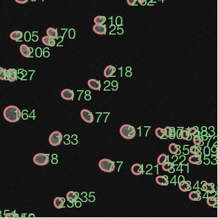

Outputs¶
EllipTrack generates two types of outputs: outputs of mainfile.m (compulsory), and optional outputs (Mask, “Ellipse Movie”, “Seg Info”, and “Vistrack”).
Outputs of Mainfile¶
Each step in mainfile.m (except Step 1 Reading Parameters and Step 6 Visualize Tracking Performance) outputs a MAT file.
Remark
With the exception of jitters in Jitter Correction, all variables are 8 x 12 x num_sites cell arrays where the three indices refer to RowID, ColumnID, and SiteID of the movie. Unless specified, the contents below describe the information of one movie.
Segmentation¶
The output MAT file segmentation.mat contains two variables: all_ellipse_info and all_num_ellipses.
all_ellipse_info. Information of fitted ellipses.
For a movie with n frames, this variable should be an n x 1 cell array. Each element is a struct describing the information of the ellipses in one frame. Five fields are available in each struct (as shown below). All the fields are m x 1 cell arrays (m: the number of ellipses in the frame) where each element describes one ellipse.
>> all_ellipse_info{2,10,1}{1} ans = struct with fields: all_cartesian_para: {50×1 cell} all_parametric_para: {50×1 cell} all_boundary_points: {50×1 cell} all_internal_points: {50×1 cell} all_features: {50×1 cell}
For each ellipse,
all_cartesian_para. Fitted coefficients of the general equation of ellipses.
A 6 x 1 array (denoted as \(a\)) satisfying \(a_1 x^2 + a_2 xy + a_3 y^2 + a_4 x + a_5 y + a_6 = 0\).
all_parametric_para. Fitted coefficients of the parametric equation of ellipse.
A 5 x 1 array (denoted as \(a\)) satisfying \((x-a_3)^2/a_1^2 + (y-a_4)^2/a_2^2 = 1\). \(a_5\) is the angle of rotation.
all_boundary_points. Points on the ellipse contour.
A 100 x 2 matrix. Each row stores the coordinates of one point on the ellipse contour.
all_internal_points: Pixels in the ellipse interior.
An m x 2 matrix where m is the number of pixels in the ellipse interior. Each row stores the coordinates of one pixel.
all_features. Features of ellipses.
A 26 x 1 array. Each element stores the value of one feature.
all_num_ellipses. Number of fitted ellipse.
For a movie with n frames, this variable should be an n x 1 array where each element stores the number of ellipses in one frame.
Jitter Correction¶
The output MAT file jitter_correction.mat contains two variables: jitters and jitter_adjusted_all_ellipse_info.
jitters. Jitters between neighboring frames.
For a movie with n frames, this variable should be an n x 1 cell array. Each element is a 8 x 12 x num_sites x 2 matrix storing the jitters between one frame and its preceeding frame. The four indices refer to RowID, ColumnID, SiteID, and Direction (x or y).
Example
A movie is captured in Site 3 of Well A02. The jitters between Frame 49 and 50 are stored in
jitters{50}(1,2,3,:).jitter_adjusted_all_ellipse_info. Information of fitted ellipses adjusted by jitters.
This variable contains the same information as all_ellipse_info (refer to Segmentation). However, the fields all_boundary_points, all_internal_points, and the third and fourth elements of the field all_parametric_para are adjusted by jitters.
Predicting Events¶
The output MAT file probabilities.mat contains five variables: all_morphology_posterior_prob, all_prob_migration, all_prob_inout_frame, all_motion_classifiers, all_migration_sigma.
all_morphology_posterior_prob. Probabilities of the morphological events.
For a movie with n frames, this variable should be an n x 1 cell array. Each element is an m x 6 matrix (m: the number of ellipses in the frame) storing the probabilities in one frame (as shown below). Each row of the matrix refers to one ellipse, and the probabilities are arranged in the order of No Cell, One Cell, Two Cells, Mitotic Cell, Newly Born Cell, and Apoptosis (refer to Terminology of Track Linking).
>> all_morphology_posterior_prob{2,10,1}{1}(1:5, :) ans = 0.0000 0.9881 0.0119 0.5000 0.0000 0.0001 0.0000 0.9999 0.0001 0.5000 0.0000 0.0001 0.0000 0.9999 0.0001 0.5000 0.0000 0.0001 0.0000 1.0000 0.0000 0.5000 0.0043 0.0001 0.0000 1.0000 0.0000 0.5000 0.0000 0.0001
all_prob_migration. Migration probabilities.
Denote \(E_{m, p}\) as the p-th ellipse in Frame m and \(E_{n, q}\) as the q-th ellipse in Frame n. The migration probability from \(E_{m, p}\) (called “source”) to \(E_{n, q}\) (called “target”, m<n) is stored in
all_prob_migration{RowID, ColumnID, Site_ID}{n}{q, n-m}(p)
Here,
{RowID, ColumnID, Site_ID}describes the movie of interest;{n}is the Frame ID of the target ellipse;{q, n-m}describes the Ellipse ID of the target ellipse (q) and the gap (in frames) between the source and target ellipses (n-m); and(p)is the Ellipse ID of the source ellipse.all_prob_inout_frame. Probability of migrating in/out of the field of view.
For a movie with n frames, this variable should be an n x 1 cell array. Each element is an m x 1 array (m: the number of ellipses in the frame) storing the probabilities in one frame.
all_motion_classifiers. Classifiers for ellipse similarity.
A Linear Discriminant Analysis (LDA) classifier for predicting whether two ellipses represent the same cell.
all_migration_sigma. Standard deviation of random walk.
A number storing the value of the standard deviation.
Generate Tracks¶
The output MAT file tracks.mat contains one variable: all_tracks.
all_tracks. Information of cell tracks.
For a movie with n cell tracks, this variable should be an n x 1 cell array. Each element is a struct describing the information of one cell track. Six fields are available in each struct (as shown below).
>> all_tracks{2,10,1}{1} ans = struct with fields: current_id: [482×1 double] gap_to_previous_id: [482×1 double] gap_to_next_id: [482×1 double] if_apoptosis: [482×1 double] daughters: {482×1 cell} if_multiple: 0
current_id. Ellipse ID at each frame.
gap_to_previous_id. Gap (in frames) between the current ellipse and the previous ellipse of the cell track.
gap_to_next_id. Gap (in frames) between the current ellipse and the next ellipse of the cell track.
For a movie with m frames, all the fields above are m x 1 arrays. Each element stores the value of one frame, or NaN if the cell track is not present at the frame.
if_apoptosis. Whether cells undergo apoptosis.
For a movie with m frames, this field is an m x 1 array. The elements equal to one if the cell undergoes apoptosis at the frame, and equal to zero otherwise.
daughters. Daughter cell tracks.
For a movie with m frames, this field is an m x 1 cell array. The elements contain the IDs of the daughter cell tracks if the cell undergoes mitosis at the frame. The elements are empty otherwise.
if_multiple. Indicator variable of whether the cell track maps to any under-segmented ellipses.
Signal Extraction¶
The output MAT file signals.mat contains one variable: all_signals.
all_signals. Single cell traces.
For a movie with n cell tracks, this variable should be an n x 1 cell array. Each element is a struct describing the information of one cell track. Multiple fields are available in each struct (as shown below).
>> all_signals{2,10,1}{1} ans = struct with fields: if_multiple: 0 ellipse_id: [482×1 double] num_tracks_at_ellipse: [482×1 double] daughters: {482×1 cell} nuc_center_x: [482×1 double] nuc_center_y: [482×1 double] nuc_first_axis: [482×1 double] nuc_second_axis: [482×1 double] nuc_area: [482×1 double] nuc_angle: [482×1 double] H2B_nuc_mean: [482×1 double] H2B_nuc_percentile: [482×1 double] FIRE_nuc_mean: [482×1 double] FIRE_nuc_percentile: [482×1 double] CDK2_nuc_mean: [482×1 double] CDK2_nuc_percentile: [482×1 double] CDK2_cytoring_mean: [482×1 double] CDK2_cytoring_percentile: [482×1 double]
if_multiple, ellipse_id, and daughters.
These fields contain the same information as the ones in all_tracks (refer to Generate Tracks).
num_tracks_at_ellipse. Number of cell tracks each ellipse is mapped to. This value (denoted as m) indicates that this cell track shares with m-1 other cell tracks at the ellipse.
nuc_center_x, First axis of the ellipse.
nuc_center_y. Second axis of the ellipse.
nuc_area. Area of the ellipse.
nuc_angle. Rotation angle of the ellipse.
XXX_nuc_mean and XXX_nuc_percentile. Mean/Percentile pixel intensities in the nucleus region.
YYY_cytoring_mean and YYY_cytoring_percentile. Mean/Percentile pixel intensities in the cytoplasmic ring.
For a movie with m frames, all the fields above are m x 1 array. Each element stores the value of one frame, or NaN if the cell track is not present at the frame.
Optional Outputs¶
- Mask
Binarized images of the nuclear marker, after possible optimization by Active Contour and Watershed.
These files are generated when if_print_mask in segmentation_para equals to one, and are stored in the folder specified by mask_path in segmentation_para. The filenames follow the format RowID_ColumnID_SiteID_Channel_FrameID.tif.
An example image of Mask is shown in Fig. 23.

Fig. 23 Example image of Mask.
- Ellipse Movie
Auto-scaled images of the nuclear marker overlaid by the ellipse contours.
These files are generated when if_print_ellipse_movie in segmentation_para equals to one, and are stored in the folder specified by ellipse_movie_path in segmentation_para. The filenames follow the format RowID_ColumnID_SiteID_Channel_FrameID.tif.
An example image of “Ellipse Movie” is shown in Fig. 24.
Fig. 24 Example image of Ellipse Movie.
- Seg Info
A MAT file storing the information of fitted ellipses in one frame. This file contains the same information as all_ellipse_info at the frame (refer to Segmentation).
Files are generated when if_save_seg_info in segmentation_para equals to one, and are stored in the folder specified by seg_info_path in segmentation_para. The filenames follow the format RowID_ColumnID_SiteID_Channel_FrameID_segmentation.mat.
- Vistrack
Auto-scaled images of the nuclear marker overlaid by the ellipse contours. IDs of Cell Tracks are displayed next to the ellipses they map to. Cell Track IDs are usually in green, though a blue ID indicates that the cell undergoes mitosis and will divide into two daughter cells in the next frame, and a red ID indicates that the cell undergoes apoptosis and will disappear from image in the next frame.
These files are generated when if_print_vistrack in track_para equals to one, and are stored in the folder specified by vistrack_path in track_para. The filenames follow the format RowID_ColumnID_SiteID_Channel_FrameID.tif.
An example image of “Vistrack” is shown in Fig. 25.
Fig. 25 Example image of Vistrack.
{kind=link}
{kind=link}